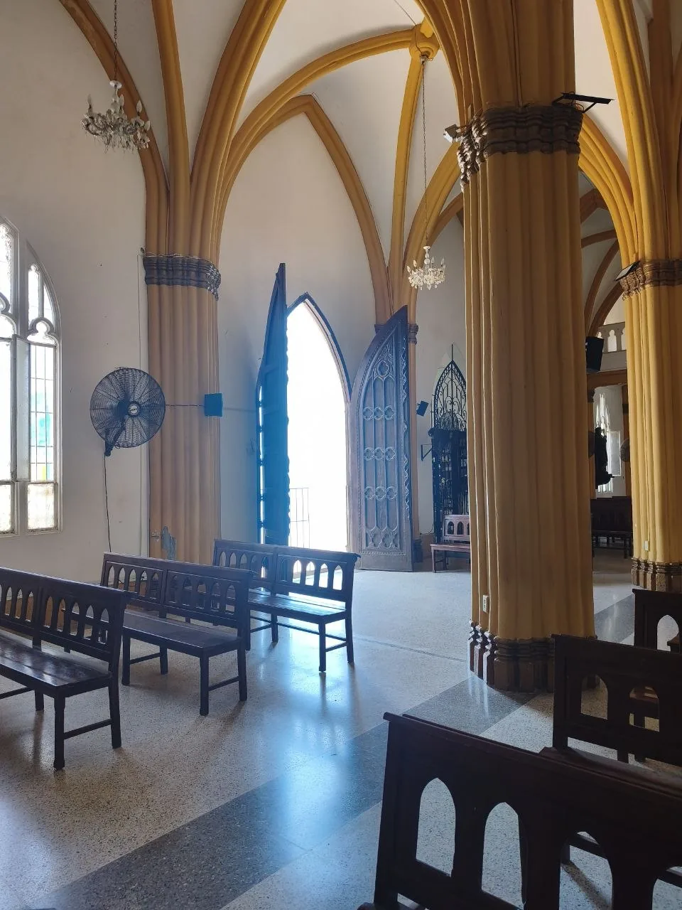
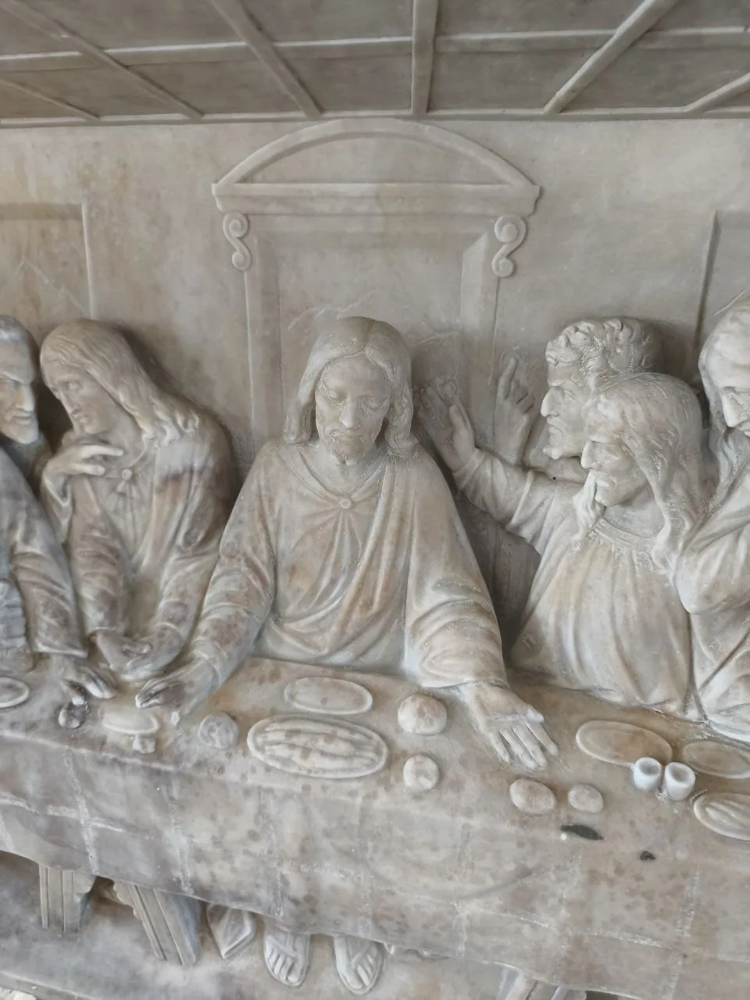
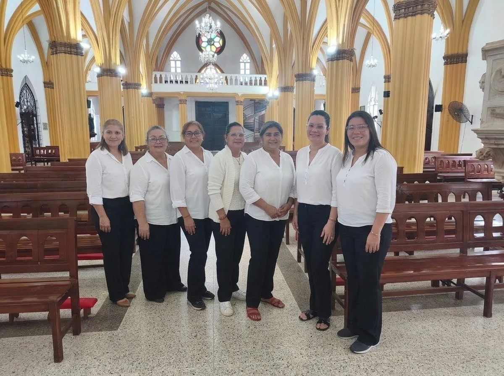

"Prefiero estar en el umbral de la casa de mi Dios" (Salmo 84, 11)
«Yo soy la puerta; el que entre por mí se salvará» (Jn 10, 9). De la voz latina ostium, «puerta», procede el nombre del ostiario: aquel a quien la comunidad confía el cuidado de las puertas de la casa de Dios.
Los ostiarios son el primer rostro que acoge a quien cruza la puerta del templo y los últimos que velan por que todo quede en orden y a buen recaudo. Cuidar la puerta es cuidar a las personas: por ella entra el pueblo que busca a Dios y por ella sale, enviado, a llevarlo al mundo.

«El ostiariado no es una realidad nueva: es un ministerio antiquísimo de la Iglesia que ahora, en nuestra Parroquia Santa Lucía, asume en sí al anterior equipo de protocolo, y encuentra así su identidad más honda y su pleno sentido.»
El ostiariado hunde sus raíces en la Escritura y en la más antigua tradición de la Iglesia. Ya en el Templo de Jerusalén los levitas ejercían como guardianes de las puertas (cf. 1 Cr 9, 17-27), y desde los primeros siglos la Iglesia de Roma contó entre su clero a los ostiarios, encargados de abrir y cerrar el templo, convocar a los fieles y custodiar cuanto en él es sagrado.
Durante siglos fue la primera de las órdenes menores. Hoy, en virtud del bautismo (cf. LG 33; can. 228 §1) y por encargo del párroco, unos fieles laicos recuperan el carisma y las funciones de aquel venerable servicio para bien de esta comunidad.

A los ostiarios se confía acoger con caridad, ordenar la asamblea y custodiar el recogimiento y la dignidad de la casa de Dios.
Recibir con cordialidad a los fieles, con especial atención a quienes llegan por primera vez, a los ancianos, las personas con discapacidad, los niños y las familias.
Indicar los lugares, mantener despejados pasillos y salidas, y coordinar el desarrollo de las procesiones litúrgicas: entrada, ofrendas y comunión.
Abrir el templo con puntualidad antes de cada celebración y cerrarlo al concluir, garantizando, con la sacristía, la custodia y seguridad del recinto sagrado.
Promover un clima de silencio, reverencia y compostura dentro del templo, velando discretamente por el buen desarrollo de las celebraciones.
Cuidar la disposición, limpieza y dignidad de la entrada y de la nave, atendiendo, con los equipos de liturgia y altar, a la ambientación propia del culto.
Atender con prudencia y caridad la seguridad de los presentes, auxiliar en emergencias y acoger con delicadeza a los pobres, los enfermos y cuantos necesiten ayuda.

Este ministerio asume e integra en sí al anterior equipo de protocolo de la parroquia, que encuentra de este modo su identidad más honda. Sus miembros hacen del umbral de la iglesia un lugar de bienvenida donde nadie se sienta extraño.
Podrá integrarlo todo fiel católico, mayor de edad —o joven desde los 16 años con acompañamiento—, que lleve una vida coherente con el Evangelio y manifieste espíritu de servicio, disponibilidad, discreción y trato cordial con las personas.
El ministerio tiene por patrono a San Martín de Porres, cuya memoria se celebra el 3 de noviembre. Su humildad, su caridad con los pobres y los enfermos y su entrega en los servicios más sencillos de la casa de Dios son modelo e inspiración para los ostiarios.
Antes de cada celebración, los ostiarios dedican un breve momento de oración, y viven su servicio como expresión de amor a Cristo, presente en la Eucaristía y en cada persona que acogen.
Los ostiarios cuidan su formación inicial y permanente en los aspectos litúrgico, pastoral y espiritual propios de su servicio. Se reúnen periódicamente para formarse y organizar el servicio, y participan al menos una vez al año en un día de retiro o reflexión. El compromiso es voluntario y se renueva cada año mediante una sencilla bendición o rito de envío.
Puedes consultar y descargar el reglamento completo del Ministerio del Ostiariado, con su preámbulo histórico, sus fines, funciones y disposiciones.
Documento en PDF · Parroquia Santa Lucía, El Empedrao (Maracaibo)
Si deseas servir acogiendo a quienes llegan a la casa de Dios y custodiando su umbral, nos encantaría conocerte.
Únete al Ministerio →